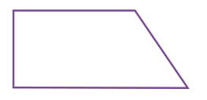
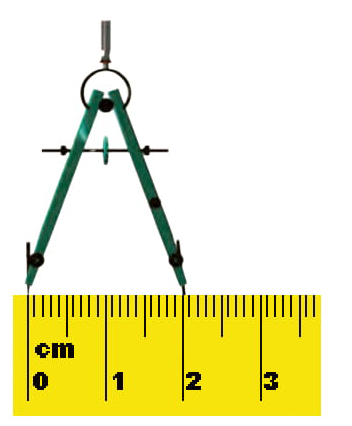
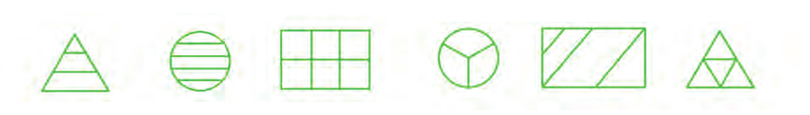
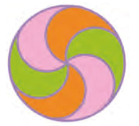
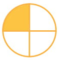
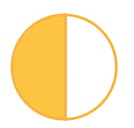

۵- شکل روبرو چند زاویه دارد؟ زاویه راست آن را مشخص کنید.

۶- دهانه پرگار چقدر باز شده است؟ با این پرگار یک دایره بکشید؛ شعاع آن چند سانتیمتر است؟

۷- با پرگار دایرهای بکشید که مرکز آن نقطهی «م» باشد و از نقطهی «د» بگذرد. این دایره را به صورت تقریبی به ۸ قسمت مساوی تقسیم کنید. کسر ۳/۸ را نشان دهید.
د . . م
۸- کدام یک از شکلهای زیر به قسمتهای مساوی تقسیم شده است؟ ۲ قسمت این شکلها را رنگ کنید و کسر مربوط به آن را بنویسید.

۹- چه کسری از این دایره نارنجی است؟ چه کسری از آن سبز است؟ چه کسری صورتی است؟

۱۰- کسر ۱/۴ را ربع و کسر ۱/۲ را نیم میگوییم.

۱/۴

۱/۲
زمانهایی را که ساعتها نشان میدهند، با ربع و نیم بنویسید.